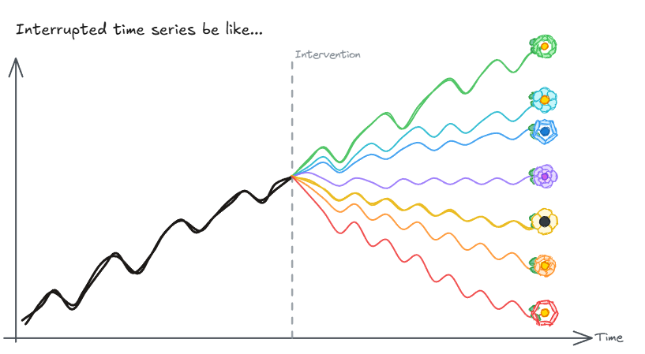

TLDR
This is a summary of my talk at the 2026 Symposium of Causal Inference in the Health Sciences in Fribourg (March 18, 2026). 📊 Full presentation: Fribourg 2026 slides
Key message: no control group is not the end of the world
The challenge: Public health authorities, insurers, and researchers need to know whether their policies work. But population-level interventions affect everyone simultaneously! They rule out randomized experiments, difference-in-differences designs, and synthetic control methods. In these situations, how do you evaluate causally what happened?
The setting: I work with Swiss health insurance claims data. These longitudinal data are collected for billing purposes and not for research. They provide a rich source of information on healthcare utilization, but lack information on diagnoses, treatment paths, and clinical/reported outcomes.
The method: I am convinced that a good method to both estimate causal effects and handle the no-control-group problem while using claims data is Interrupted time series (ITS). ITS is not part of the traditional econometric toolkit, because economists are skeptical of settings without control groups. But in the world of public health, ITS is widely used.
My 🧂 meta-commentary on ITS: Yes, ITS relies on strong identifying and modeling assumptions, and it has been widely misused. However, and ironically, I’ve seen differences-in-differences applications with such weak/implausible control groups or such thin evidence in favor of the common trend assumptions that authors should have used ITS instead.
ITS is a pragmatic response, one that I like to call “second-best” response, to get causal estimates. Or if we don’t believe in these kinds of methods to uncover true causal estimates, at least get a better sense of what happened than just eyeballing the data. This is the kind of evidence that I need in my work and that policy makers need to make informed decisions.
The illustration: I showcase a credible and hihly policy-relevant example of ITS:Two successive Swiss policies targeting the same low-value practice — unnecessary Vitamin D testing. Plus, this example gives the perfect opportunity to draw cool graphs. Below is an exposé of my presentation.

The Setting: Causal Analysis Without a Control Group
Evaluating the impact of public health policies is essential for accountability, quality improvement, and better policy design. Yet many real-world settings make this hard:
- No control group: national clinical guidelines, reimbursement restrictions, or public health campaigns affect all units simultaneously.
- Routine data: health insurance claims data are collected for billing and administrative purposes, not designed for causal research. They are available, but they were not built for this.
The Method: Interrupted Time Series
Interrupted time series (ITS) is a pragmatic response to the no-control-group problem. The core idea: use the pre-intervention trend to project a counterfactual — what would have happened without the intervention — and compare this to what was actually observed.
ITS is widely used in real-world evidence and health policy evaluation. It is also widely misimplemented (see survey cited in the presentation). The key risks:
- Strong causal assumptions: trend continuity, no concurrent interventions, and no anticipation effects must all hold.
- Functional form: the shape of the counterfactual matters enormously. Misspecification leads to biased estimates.
Sound implementation requires careful attention to both. This is the problem that itscausal, an R package I developed with colleagues of the Berner Fachhochschule, is designed to address.
The Illustration: Vitamin D Testing and Low-Value Care
Switzerland offers a natural experiment: two successive policies targeting the same unnecessary practice — routine Vitamin D testing for low-risk patients. A clinical recommendation in 2021, followed by a coverage restriction in 2022. The results were strikingly different.
The full case study, including the data, methodology, and results, is covered in detail in this post. The key takeaway for this talk: soft nudges and hard levers can both work — but they do not work equally.
What We Can Do With Routine Data
The core message is, I believe, encouraging: no control group is not the end of the world. When rich longitudinal claims data are available, interrupted time series can produce credible causal estimates of policy effects. As long as the analysis is done carefully.
Administrative data from health insurance systems like SWICA’s are a powerful resource for real-world evidence. They cover large populations, track individuals over time, and record actual healthcare utilization rather than self-reported behavior. These are precisely the properties that make ITS viable.
The challenge is to move from widely used to soundly implemented. itscausal is our contribution to that goal.
📊 The full presentation is available here: Fribourg 2026 slides
🔗 itscausal on GitHub: github.com/ASallin/itsCausal